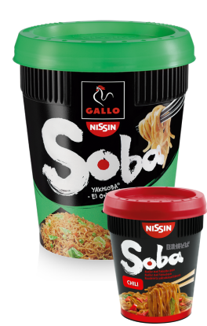

NISSINSOBA
Composés de délicieuses nouilles aux légumes agrémentées d’une irrésistible sauce Yakisoba, sont faciles à préparer et pratiques à servir au bureau comme à la maison, grâce à leur couvercle-passoire.
Sept recettes savoureuses:
Classic, Chili, Curry, Teriyaki, Thaï, Sukiyaki et Yakitori.